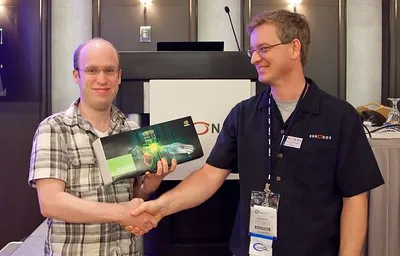
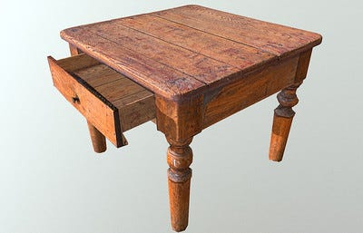
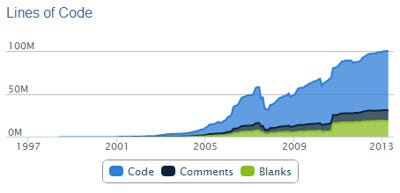

Graphics programming, simply put, is the manipulation of pixels on your screen. At the start of graphics programming, pixels were manipulated for shell commands. Today, they are used to depict full blown interactive realities.
I would argue graphics programming was/is the cornerstone to human interaction with computers for all time.
It is super cool, super useful and, guess what, super hard.
Manipulating pixels in some organized way is not an easy task.
Quick History of Graphics Programming
From the 1960s-1990s all pixel manipulation was done through direct changes to the pixel itself, in memory.
Companies and individuals made proprietary libraries to manipulate pixels in memory in increasingly consistent ways.
In the late 1990s operating systems began standardizing how pixels were accessed. Instead of relying directly on memory, they relied on the operating system kernel to manipulate the memory.
Essentially programmers were blocked from directly accessing memory and instead were forced to run everything through OS system calls.
Each operating system thus had a different way of writing to pixels.
OpenGL was born
For many years there was a demand to make universal libraries across all devices for these system calls and memory changes. An Application Programming Interface(API) was needed.
Photo of 2010 Khronos Group conference
OpenGL was created by a silicon valley company to meet this need. Operating system changes, a constant stream of new graphics cards and software created great demand and low supply. OpenGL quickly became the most popular proprietary pixel manipulation library (graphics API).
OpenGL was free and available to everyone since its inception. The goal with it is to allow pixel manipulation to be the same in all languages and systems.
Think of this. How cool is it to manipulate pixels in all languages in the same way and for it to work on all operating systems?
Graphic Programming Is Hard
It is my opinion that graphics programming is the most difficult field in computer programming. In the past this may have been a false statement but today the standards are just too high for this field.
We are basically using math to represent reality in the form of pixel structures.
Photo by Maantas Tatantas
To create patterns and uniform shapes, it requires precision, Calculus, Linear Algebra and many other principles of mathematics. For 3D rendering you will be surprised how much you need to know about the nature of light on a surface to create the right pixel structure.
What makes so many people great at graphics programming is not how easy or quick it is to pick up. It is that graphics programming is freakin cool.
People dedicate their lives to pixel manipulation, learning all the math, getting a PhD in graphics programming, reading all the latest research papers and constantly improve their passion.
I myself absolutely love graphics programming and have great admiration for those who practice it.
Make no mistake, graphics programming takes years to get okay enough to create small projects.
Photo by Annie Spratt
After 3 years of constant practice you may be able to get a junior level job somewhere as an OpenGL developer, who knows?
This is not the 1990s anymore. The standards are no longer just manipulating pixels for simple applications. Today, we are attempting to create reality itself using math. This is no easy feat.
What You Need to Know to Start Learning Graphics Programming
Graphics programming is available in all complete languages. Python, Javascript, Java, C++ and all the rest have OpenGL, Vulkan & DirectX.
The difference between the languages will be the language itself. All the function calls in those languages are the same.
This means the function names, variable names and classes used in those APIs are all the same. It just seems different due to the language. Take a look:
#include <GLFW/glfw3.h>
#include <GL/glu.h>
#include <stdio.h>
void display() {
glClear(GL_COLOR_BUFFER_BIT);
glColor3f(1.0, 0.0, 0.0); // Set color to red
glBegin(GL_LINES);
glVertex2f(-0.5, -0.5); // Line starting point
glVertex2f(0.5, 0.5); // Line ending point
glEnd();
glFlush();
}
int main() {
GLFWwindow* window = glfwCreateWindow(400, 400, "OpenGL Line Example", NULL, NULL);
glfwMakeContextCurrent(window);
while (!glfwWindowShouldClose(window)) {
display();
glfwSwapBuffers(window);
glfwPollEvents();
}
glfwTerminate();
return 0;
}Inside a window this is a line rendered every frame written in C++ OpenGL. Now let's look at it in Python:
import glfw
from OpenGL.GL import *
def display():
glClear(GL_COLOR_BUFFER_BIT)
glColor3f(1.0, 0.0, 0.0) # Set color to red
glBegin(GL_LINES)
glVertex2f(-0.5, -0.5) # Line starting point
glVertex2f(0.5, 0.5) # Line ending point
glEnd()
glFlush()
def main():
window = glfw.create_window(400, 400, "OpenGL Line Example", None, None)
glfw.make_context_current(window)
if not window:
glfw.terminate()
return
while not glfw.window_should_close(window):
display()
glfw.swap_buffers(window)
glfw.poll_events()
glfw.terminate()
if __name__ == "__main__":
main()Looks pretty similar right? All languages have the same feel according to the graphics API.
As a note, if you change the window library the code will look different but the OpenGL parts will all be the same.
glClear(GL_COLOR_BUFFER_BIT) is the same in every language, for example.
When you start learning it is also a good idea to pick a time period to learn. I know this sounds weird, but hear me out.
Every decade the whole graphics programming space goes through an overhaul.
The code you see above uses graphics methodologies from 2005-2012.
As a run down, there are 1985-1992 methods, 1992-2000, 2000-2005, 2005-2012 and the newer ones from 2014+ with Vulkan.
The closer we get to modern graphics programming, the more difficult and complicated the code gets.
Photo by Linux Screenshots
That line code I showed you from 2005-2012 was 17 lines. If we were to convert it to the 2012-2018 version of graphics programming it would come out to 76 lines.
I can't post it here as it is too long. If you really want to see it, here is a sample from 2012-2018 graphics programming code for a line.
If we go further to graphics methods from 2018+, just a simple triangle is infamously 1000+ lines in Vulkan.
And, you know what is strange, it is actually more and more performant as we get closer today.
Not only is the code becoming more complex, it is becoming more efficient and more and more power is being given to the developer.
Starting in graphics programming
So, to learn OpenGL you have to pick a language, pick a graphics programming time period and a beginner friendly API then start learning. In another article I give a more in depth C++ OpenGL learning guide.
Photo by Winnifredxoxo
In pretty much all the tutorials today on the internet they say to use methods from 2012-2018 to start. They say it is a perfect balance between complexity & the modern style.
The goal would be to eventually catch up to the modern style of graphics programming today. Though, it is not recommended to try Vulkan first but OpenGL from 2014...
Anywho, I hope you learned something...
Happy coding!
Resources
What is an API: How an API Works and Why They Are So Cool
C++ OpenGL Guide: Want the Ultimate Guide to Easily Learning OpenGL in C++? Here It Is.